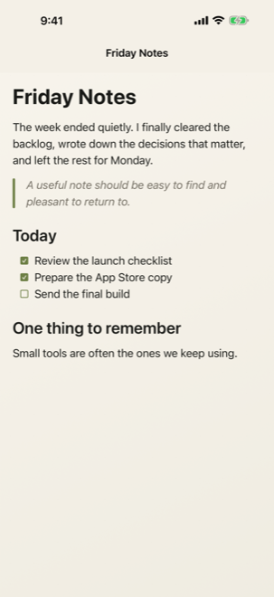
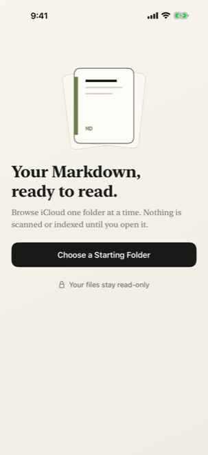
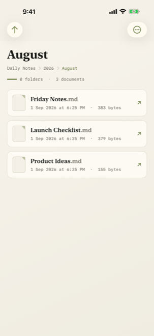
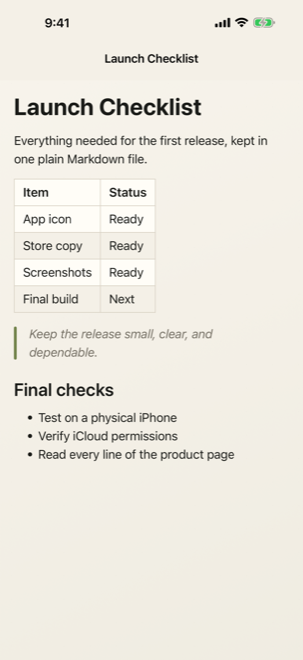

Browse familiar folders
Pick a starting folder in iCloud Drive, move through subfolders and return to where you left off.
Markdown reader for iPhone
Open the notes, reports and documents you keep in iCloud Drive—without setting up a vault or waiting for an index.

Avocado Lab is an independent product lab based in Hong Kong. We take ordinary frustrations and shape them into focused, dependable tools.
Easy MD began with a simple need: open a Markdown file, read it well, and move on.
Choose a folder, browse one level at a time and tap the file you need. Easy MD reads from where your documents already live.
Pick a starting folder in iCloud Drive, move through subfolders and return to where you left off.
Headings, lists, tasks, quotes, tables, code, links and images are laid out for comfortable reading.
Follow relative links between Markdown files and view relative images inside your documents.
Five text sizes, sorting, expandable YAML front matter, dark mode, Dynamic Type and VoiceOver.



Easy MD is deliberately read-only. It cannot create, edit, rename, move or delete your files.
AVAILABLE ON THE APP STORE
Download Easy MD for iPhone, or get in touch with Avocado Lab.
info@avocado-lab.com